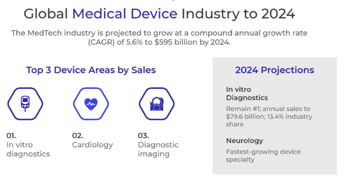

INDUSTRY BACKGROUND (MedTech)
• The Medical Device Industry (MedTech) is comprised of companies that develop, manufacture, and distribute medical equipment devices that are transforming the health industry and offer more effective and less invasive treatments and procedures.
• The industry is committed to delivering to healthcare providers the best tools to diagnose and treat patients. There are over 6,500 MedTech companies in the United States alone that are focused on driving innovation into the healthcare field.
• MedTech is a broad category that includes high-tech tolls and instruments, diagnostic techniques, and health information systems
• Life-changing medical devices allow millions of people to live longer and healthier lives and the United States continues to lead the world in medical advancements.
• Global Medical Device Technology market will grow at a compound annual growth of 4.9% from 2023 tp 2027. In 2023 MedTech prodcued revenues of $465.5B and is expected to grow to $591.3B by 2027 (Deloitte)

Key Industry Facts:
• The U.S. hold the position of the largest MedTech Market in the world with 40% of the global medical device market
• Since 1980, there has been a 38% decrease in the number of patient days spent in hospitals due to medical technologies interventions
• Advanced medical devices allow people to live longer and healthier lives due to advancements in medical technology
• Medical devices improve the efficiency of health care systems through earlier disease detection and more effective treatments that reduce the cost of medical care
• MedTech drives economic growth by creating high-paying manufacturing jobs in the U.S. and through net exports to other countries around the world